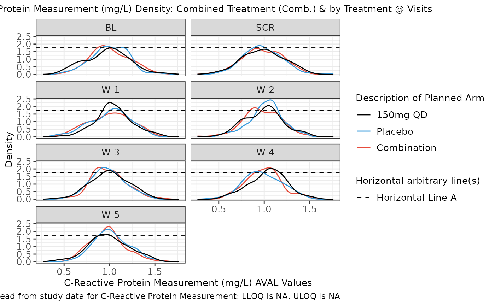

Function to create a density distribution plot.
Source:R/g_density_distribution_plot.R
g_density_distribution_plot.RdDefault plot displays overall density facetted by visit with treatment arms and combined treatment overlaid.
Usage
g_density_distribution_plot(
label = "Density Distribution Plot",
data,
param_var = "PARAMCD",
param = "CRP",
xaxis_var = "AVAL",
trt_group = "ARM",
unit = "AVALU",
loq_flag_var = "LOQFL",
xlim = c(NA, NA),
ylim = c(NA, NA),
color_manual = NULL,
color_comb = "#39ff14",
comb_line = TRUE,
facet_var = "AVISITCD",
hline_arb = character(0),
hline_arb_color = "red",
hline_arb_label = "Horizontal line",
facet_ncol = 2,
rotate_xlab = FALSE,
font_size = 12,
line_size = 2,
rug_plot = FALSE
)Arguments
- label
text string used to identify plot.
- data
ADaMstructured analysis laboratory data frame e.g.ADLB.- param_var
name of variable containing biomarker codes e.g.
PARAMCD.- param
biomarker to visualize e.g.
IGG.- xaxis_var
name of variable containing biomarker results displayed on X-axis e.g.
AVAL.- trt_group
name of variable representing treatment group e.g.
ARM.- unit
name of variable containing biomarker unit e.g.
AVALU.- loq_flag_var
name of variable containing
LOQflag e.g.LOQFL.- xlim
('numeric vector') optional, a vector of length 2 to specify the minimum and maximum of the x-axis if the default limits are not suitable.
- ylim
('numeric vector') optional, a vector of length 2 to specify the minimum and maximum of the y-axis if the default limits are not suitable.
- color_manual
vector of colors applied to treatment values.
- color_comb
name or hex value for combined treatment color.
- comb_line
display combined treatment line toggle.
- facet_var
variable to use for facetting.
- hline_arb
('numeric vector') value identifying intercept for arbitrary horizontal lines.
- hline_arb_color
('character vector') optional, color for the arbitrary horizontal lines.
- hline_arb_label
('character vector') optional, label for the legend to the arbitrary horizontal lines.
- facet_ncol
number of facets per row.
- rotate_xlab
45 degree rotation of x-axis label values.
- font_size
font size control for title, x-axis label, y-axis label and legend.
- line_size
plot line thickness.
- rug_plot
should a rug plot be displayed under the density plot. Note this option is most useful if the data only contains a single treatment group.
Examples
# Example using ADaM structure analysis dataset.
library(stringr)
# original ARM value = dose value
arm_mapping <- list(
"A: Drug X" = "150mg QD", "B: Placebo" = "Placebo", "C: Combination" = "Combination"
)
color_manual <- c("150mg QD" = "#000000", "Placebo" = "#3498DB", "Combination" = "#E74C3C")
ADLB <- rADLB
var_labels <- lapply(ADLB, function(x) attributes(x)$label)
ADLB <- ADLB %>%
mutate(AVISITCD = case_when(
AVISIT == "SCREENING" ~ "SCR",
AVISIT == "BASELINE" ~ "BL",
grepl("WEEK", AVISIT) ~
paste(
"W",
trimws(
substr(
AVISIT,
start = 6,
stop = str_locate(AVISIT, "DAY") - 1
)
)
),
TRUE ~ NA_character_
)) %>%
mutate(AVISITCDN = case_when(
AVISITCD == "SCR" ~ -2,
AVISITCD == "BL" ~ 0,
grepl("W", AVISITCD) ~ as.numeric(gsub("\\D+", "", AVISITCD)),
TRUE ~ NA_real_
)) %>%
# use ARMCD values to order treatment in visualization legend
mutate(TRTORD = ifelse(grepl("C", ARMCD), 1,
ifelse(grepl("B", ARMCD), 2,
ifelse(grepl("A", ARMCD), 3, NA)
)
)) %>%
mutate(ARM = as.character(arm_mapping[match(ARM, names(arm_mapping))])) %>%
mutate(ARM = factor(ARM) %>%
reorder(TRTORD))
attr(ADLB[["ARM"]], "label") <- var_labels[["ARM"]]
g_density_distribution_plot(
label = "Density Distribution Plot",
data = ADLB,
param_var = "PARAMCD",
param = c("CRP"),
xaxis_var = "AVAL",
unit = "AVALU",
color_manual = color_manual,
color_comb = "#39ff14",
comb_line = FALSE,
facet_var = "AVISITCD",
hline_arb = 1.75,
hline_arb_color = "black",
hline_arb_label = "Horizontal Line A",
facet_ncol = 2,
rotate_xlab = FALSE,
font_size = 10,
line_size = .5
)
